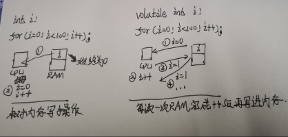
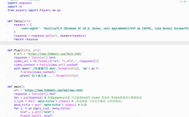
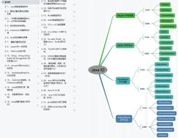

-
18天前 Python爬虫 真的好用！程序员必须安装的 Chrome 插件！ 给大家推荐一些自己常用的chrome 插件，绝对可以提升你的上网和工作效 率，感兴趣的话，可以体验一下（下载链接在文末）。

-
1天前 Linux Linux就该这么学【基础指令】 目录linux常用指令ls指令. 和 . .的意思cd的常用方式Linux的目录结构
 -
10天前 Linux 【详解】面试必问：MySQL索引底层原理（基于B+Tree） MySQL索引底层实现我们知道，索引在数据查询的时候加快数 据查询的速度。起初底层的存储是以链表的形式进行存储
 -
8天前 算法 Matlab与C语言混合编程_Dijkstra算法 相信有不少小伙伴还对 EdgerOS 比较陌生，在使用之前先给大家简单介绍一下什么是 EdgerOS。 EdgerOS 是基于 SylixOS 内核的智能边缘计算操作系统
-
9天前 算法 【数据结构】二叉树经典OJ练习 本章只是二叉树的部分简单练习，对于这部分题目大多比较简单 ，但重要的不是能过OJ，而是深入理解每一道题的解题原理。 多思考，勤动手，才是正解。对于编程，我们要做到画图半小
-
10天前 操作系统 从根本上了解异步编程体系 或许你也听说了，摩尔定律失效了。技术的发展不会永远是指数上升， 当芯片的集成度越来越高，高到 1 平方毫米能集成几亿个晶体管时， 也就是人们常说的几纳米工艺，我们的半导体行业就踩到天花板了
-
11天前 Python OpenCV-Python计算机视觉函数 这篇文章主要记录我所了解到的一些OpenCV的函数和参数介绍， 主要是参考博主一马归一码的Python计算机视觉学习做了一些 常用的图像处理的函数和具体的参数介绍，方便大家查
